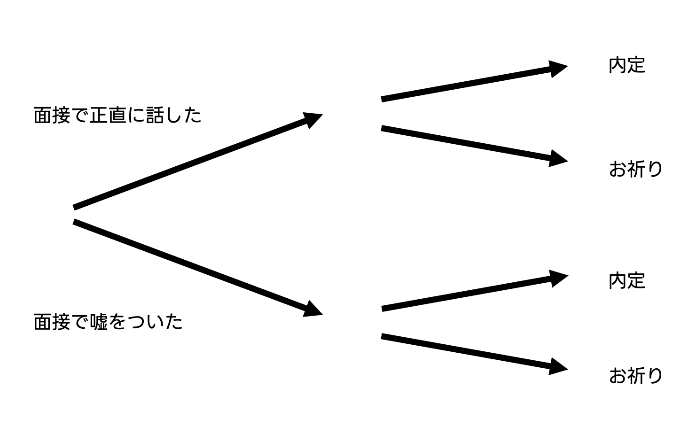

表題の通りです。私は、第一志望ではない企業に対して「私は第一志望ではありません」とお答えします。その理由は、相手に、自分に、そしてデータを扱う人間として、嘘をつきたくないからです。以下ご説明します。
私が第一志望ではない企業に対して「私は第一志望ではありません」とお答えする理由は、相手に、自分自身に、そしてデータを扱う人間として、嘘をつきたくないからです。ほとんどの新卒は、内定をいただいても入社する企業は一社のみです。よって、「内定したら入社する」企業以外は全て第一志望ではないことになります。
相手は、採用目標人数を達成するという課題があります。無理に第一志望ですと言うよりも、こちらから正直に言った方が、採用の目安が立てやすいです。
自分自身は、面接で嘘をついて入社した企業に入社した際、自分はこの企業に嘘をついて入社したのか、という後悔の念を抱きながら人生を歩むことになります。
ちょっとここで脱線します。私は中学生の頃から林修先生の大ファンです。（特に林先生の初耳学（日曜日の初耳学）はずっと見ています）高校では、祖父母からもらったお年玉を林先生のオンライン授業につっこんでいました。（勉強したいからというより、先生の話が聞きたいから）そんな、私が好きでしょうがない林先生が、とある番組でこんな発言をされていました。うろ覚えなので、細かいニュアンスが違う場合があります。
受験まであと一ヶ月だね。受験の一ヶ月前になると、必ずこの話をする。ひと月頑張って頑張った奴がいるね。ひと月頑張っても落ちた奴がいる。ひと月頑張らなくて受かったやつがいる。ひと月頑張らなくて落ちたやつがいる。
ひと月頑張って受かった人、ひと月頑張って落ちた人はいいんです。問題はひと月も頑張れなかったのに落ちた人。自分は受かったけれど、ひと月も頑張ることが出来なかったのか、という思いを持ちながら生きていかなけらばならない。
これには深く納得し、実際自分も受験一ヶ月前には精一杯頑張ったものでした。さて、面接に話を戻します。林先生のこの図を、面接に置き換えて考えてみます。
自分が面接で正直に話した結果内定した、正直に話した結果内定をもらえなかったのはいいのです。問題は、面接で嘘をついたにもかかわらず内定した場合です。自分はこの会社に嘘をついて入社した、という自責の念を持ちながら会社を歩くことになります。それは私にとって耐え難いことです。
データの解釈の違いはあっても、データそのものを改竄することはデータの分析を行う人間として絶対にやってはいけない行為だと考えています。第一志望かどうかという問いには明確な答えがあるものです。（第一志望です。第一志望ではありません。自分の中で迷っています。など）そうであるのに自分の都合のいいようにデータを書き換える人間は、データ分析を行うのに向いていない、と考えています。（何か別の、その人にあった職業があるはずです）私はそのような行為は行いません。
面接官は、本音と建前をきちんと分けられる人間かどうかをみている。これぐらいの嘘もつけないようでは、社会では生きていけない。
まず、面接官はこの質問で本音と建前を分けられる人間かどうかをみているわけがありません。面接官はメンタリストか何かなのでしょうか。
また嘘をつく能力を計りたいのなら、コンビニで売っているミネラルウォーターを取り出して「この水を10000円で売るにはどうしたら良いか？」などと直接能力をはかる質問を聞いた方が良いです。（私は嘘をつく能力はだいぶ低いです。人狼が苦手です）
それに、「本音と建前」を分けられるからといって、嘘をついていいことにはなりません。嘘を付かずとも建前を持って場を適切に流すことは、十分に可能であると信じています。ましてや、面接の場は面接官と就活生の相互理解を深め合う場です。嘘をつくことは双方の利益にならないと思っています。
就活を恋愛に例えて、「君は2番目に素敵だけど、付き合おう」とは言わないだろう？という言説
就活と恋愛はどう考えても別の概念です。就活は生きていくため、勤労の義務を果たすに必要なものであり、かつ職業選択の自由で守られているものでもあります。一方恋愛は突き動かされてするものです。全く違います。
もし就活が恋愛とよく似ているとしましょう。このとき「他者の選考状況はどうなっていますか？」は「他にはどんな人に告白していますか？」で、それに対する回答「〇〇という就活の軸を持っており、A社、B社、C社などを受けております。しかし、御社から内定をもらった暁には、A社、B社、C社の選考は辞退し、そこで就活を終えます」は、「顔がタイプ、おしとやかな性格という観点で、Aさん、Bさん、Cさんなどに告白しています。しかし、あなたから告白OKの返事をもらったら、Aさん、Bさん、Cさんの告白を取り下げ、あなたと付き合います」となります。
就活の、恋愛へのアナロジーがまったく的を射ていないことは明らかです。
①正直に、そして謙虚に「第一志望ではない」という。（第一志望でないなら受けるなよ、という声があることはありますが、内定なしという状態が怖いのです。企業側には採用コストをかけてしまうことをお詫びいたします）
②就活の軸をもって、相手に納得していただくよう努める。相手から詳細な情報をいただいた際には、それを擦り合わせて志望度について深く考え、改めて志望度を見直す。
その前に、大前提として。。。
⓪自己分析、および企業分析をしっかりと行い、志望度の高い企業、自分の納得できる企業のみにエントリーする。よって、そもそも私が面接を受ける企業はどの会社も志望度が高い状態にする。
日々自分を成長させ、第一志望でなくても採用していただけるよう努める。
以上、『私は「弊社は第一志望ですか」に正直に答えます』でした。ここまでお読みくださり、ありがとうございました。